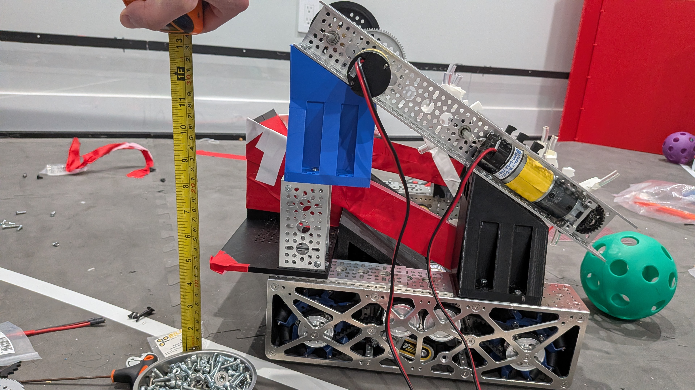

Self-Driving Cars/Atlas Autoware
I'm the secretary and co-engineering lead of a club team of other high schoolers with a goal to build self driving cars and compete at IGVC against university student teams.
Learn more at atlasautoware.org
Click card to expand details
As secretary of the club, some of my duties have included managing logistics, planning meetings, and keeping track of how club time is used. As co-engineering lead, I've mainly focused on CAD. During my freshman year of high school when I first joined the team, I designed a modular baseplate mounting system for the car. We use a Traxxis Slash 4x4 chassis, and I made a baseplate with clip in modules to make it easy to move parts around. During my sophomore year, I refined the mounts and made more to include a mount for the light, the Jetson Orin Nano, and the servo motor driver.
Here is the baseplate:

And here is a closer look at how the mount works, with stabilizing bars on two opposing sides and clips on the other two sides. Not shown in the image is the thicker part of the clip, where you push to release it.

This system allows us to easily swap and move components as needed.
Learn more about our team and support us at atlasautoware.org
Science Olympiad
I competed in Science Olympiad at Longfellow Middle School and placed 5th and 7th as a team at nationals.
Click card to expand details
In 7th grade, I competed in the following events: Codebusters, Rollercoaster, and Bridge. I was an alternate for the states and nationals competitions, and competed in the Solar Power trial event. This event consisted of building a small box heat a beaker of water as much as possible from a lamp. My partner and I also took a test, which we were allowed to have a binder for. Our team won 1st place at states at the University of Virginia and 5th at nationals at Wichita State University.
The objective of the bridge event was to build a bridge as light as possible spanning a gap and holding as much weight as possible, up to 15 kilograms of sand for a bonus. My partner and I were very frequently able to hit this target.
The objective of the roller coaster event was to build a structure within certain size constraints that would allow a marble to travel from start to finish in anywhere from 30 to 60 seconds. The target time was announced immediately before starting an 8-minute timer, and we had that time to make any adjustments and do official, timed runs to get as close as possible to the target time.
In Codebusters, we worked as a team of 3 to solve various ciphers and decode messages in a 50 minute timed test format.
These are some photos from my 7th grade events:

In 8th grade, I competed in Wheeled Vehicle, Forestry, and Ecology. I competed at both states and nationals, winning Forestry at the state level. My school won states and placed 7th overall at the national tournament at Michigan State University.
The goal of Wheeled Vehicle was to build a car using elastic power to travel a variable distance in a range of 6 feet or so and stop as close to a point at that distance as possible. The target distance was announced immediately prior to the start of the event, and we had a limited amount of time to make adjustments as needed. We placed 3rd at the regional tournament. Unfortunately, our device frame, which had never been problematic, snapped on the way to the national tournament. The break wasn't visible and became apparent only as we practiced the night before. We did our best to fix it, but ultimately placed 55th in the event at the national level.
For Ecology, we were allowed a single letter-size sheet of paper as a cheatsheet and had 50 minutes to answer questions covering a variety of ecological topics. We placed 5th at states.
For Forestry, we were allowed a binder and a field guide to help identify trees and answer related questions. The 50 minute test typically had some general tree- or pest/disease-related questions, followed by an identification section. In the identification section, we had to find what tree was pictured, usually based on a leaf, fruit, or even bark photo. We then had to answer a series of questions related to each tree we identified. My partner and I won 1st place at states and placed 13th at nationals in Forestry.
These are some photos from Wheeled Vehicle in 8th grade:

FIRST Tech Challenge (FTC) Robotics
I worked on the engineering side of a FTC robot for the 2025-26 DECODE season. I was on team #14575 Capital Bots.
Click card to expand project details
Our robot utilized rows of fan-like wheels to bring balls up the ramp, and used a hard wheel at the top to launch them for scoring. Our initial designs included sorting, but we had to simplify towards the end of the season due to a series of setbacks. Our final design a few days before competition looked like this:

In addition to working on CAD for the main bot making things like the ramp, the sorting mechanism, and extra intake wheels, I also made other designs. For example, I designed this bot which would allow for sorting, giving us more points. However, we were unable to implement it due to time constraints.

At competition, we unfortunately were unable to qualify for later competitions. However, we still tried our best, learned a lot, and won a match, as well as an award.

TJHSST Cross Country and Track
In addition to building projects and working on cars, I also run.
Click card to expand project details
Outside of building hardware projects and competing in various clubs, I also enjoy running cross country and track (indoor and outdoor) for my school.
Running has been a life-changing experience for me. Before I started running, I focused largely on school. While it got me results, I wasn't very happy. Running helps me relieve stress, especially when I run with my friends.
I also have learned a lot through injury. Since freshman year, I've recovered from Patellofemoral Pain Syndrome, low iron anemia, and Illiotibial Band Syndrome. All of these experiences have taught me how to train smarter, manage load, recover better, and stay healthier. I also enjoy cross-training through biking and swimming (though I enjoy swimming much less), and hope to one day complete an Ironman triathlon.
Follow me on